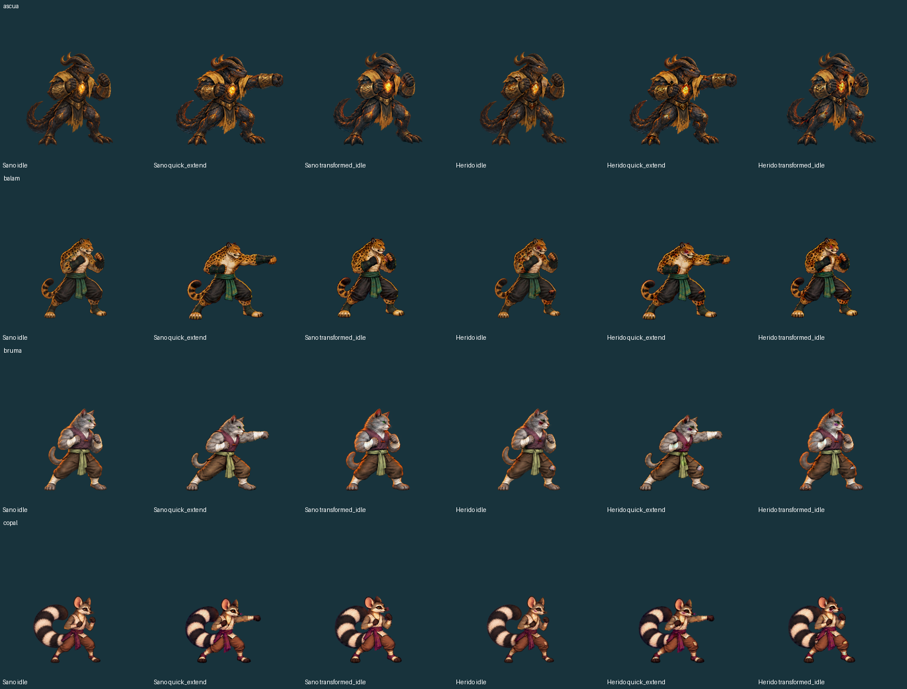
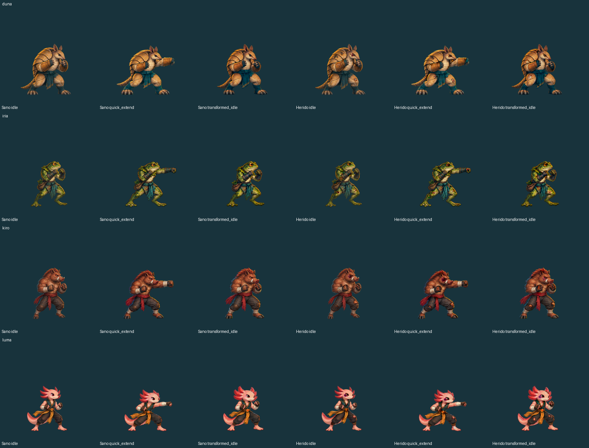
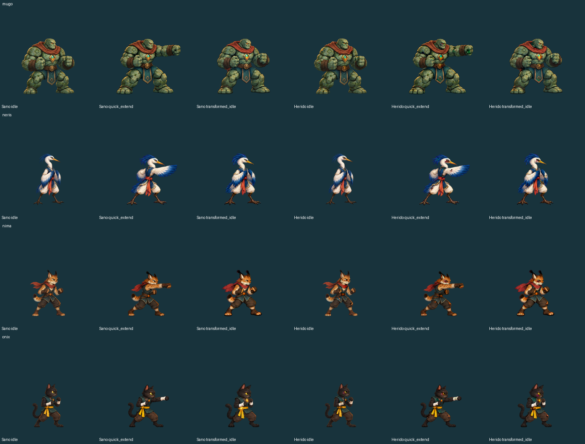
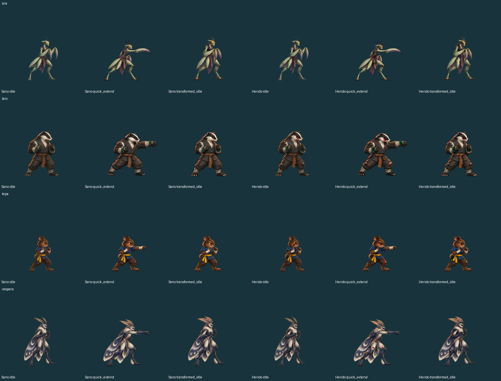
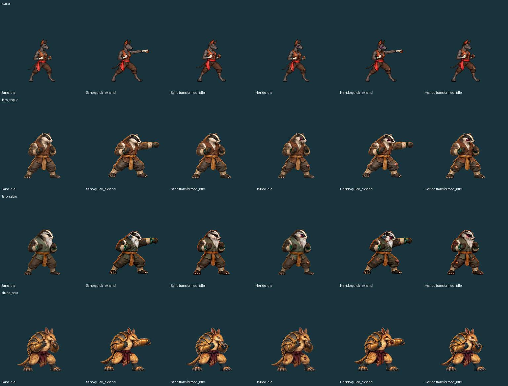
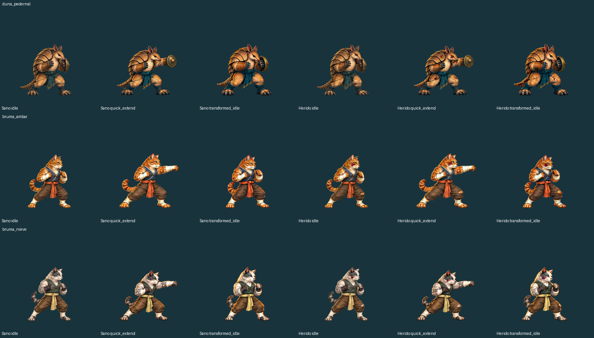

BRASA · REVISIÓN DE ARTE
Heridas más visibles, el mismo personaje
Compara una misma pose. La versión corregida mantiene la silueta y los colores de las zonas intactas. Las heridas y roturas tienen más contraste local; el fondo de cada PNG es transparente.
Sano · referencia
Escala propia de cada personaje.Herido · anterior
Revisión anterior: heridas demasiado suaves.Herido · daño reforzado
Geometría idéntica; solo cambia el daño local.
Cargando imágenes…
La cuadrícula es solo una ayuda del visor. No forma parte de los sprites. Las diferencias naturales de altura y volumen entre personajes se conservan.
23 cuerpos · 40 poses por cuerpo · versiones sana y herida
Cambios, comprobaciones y alcance
Comparación de todos los personajes





